Enabling Syslog for Cisco AS 5505 and 5506
Parts and Materials Required
- FSE Laptop
- Serial-to-USB adapter
- Serial Console cable
Time Required
- 15 minutes
Procedure
- Obtain from the customer's IS/IT Administrator their Syslog server IP and protocol/listening port. You will need this information to enable Syslog on the firewall.
- Ensure that the firewall is powered on by checking the Power, Status, and Active lights (located on the front of the firewall) are solid green.
- Connect the Serial-to-USB adapter to a USB port on your FSE laptop.
- Connect the serial end of the light blue console cable to the Serial-to-USB adapter.
 Connect the other end of the console cable to the firewall console port.
Connect the other end of the console cable to the firewall console port.
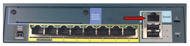
- Run HyperTerminal, located in Start>Programs>Accessories>Communications.
- At the Connection Description window, give the connection an arbitrary name and select an icon. The actual name of the connection and the icon selection does not affect the outcome of this procedure.
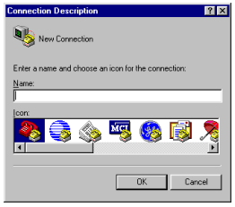
- At the Connect to window, select the correct COM port being used by the Serial-to-USB adapter.
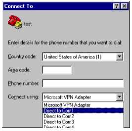
- If this is unknown, open Windows Explorer. Right-click on My Computer and click on Manage. Click on Device Manager in the left-hand pane (see following image).
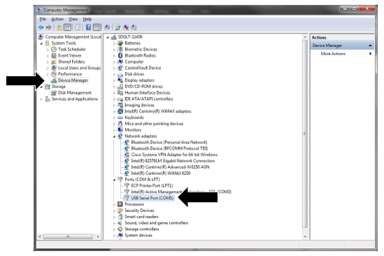
- Expand the Ports (COM and LPT) section. Find the Serial-to-USB adapter and note the COM port assigned to it. The COM port is found in parentheses.
- Once the correct COM port has been selected in the Connect to window, Click OK.
- At the COMX Properties (X is the port number chosen above) window, change the Bits per second to 9600 and click OK.
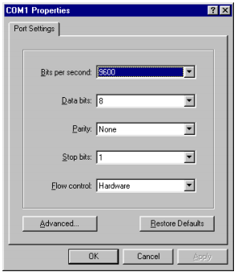
- Now you will be looking at the main HyperTerminal window (following image).
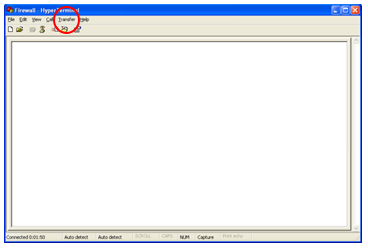

Note— Before reprogramming any firewall, it is extremely important to download the current firewall configuration for backup purposes. This will ensure that no information is lost and having the backup information will be vital in troubleshooting in case the reprogramming is not successful. Steps 11 to 19 are instructions to perform the backup. - Open the Transfer drop-down menu (at the red circle in the image above) and click Capture Text. The Capture Text feature will capture all text seen in the window into a text file.
- Choose a directory to save the text file to and choose a name for the file, such as:
XXXXX mm-dd-yy firewall config backup (where XXXXX is the Serial# of the Panther System)
- Once back at the main window, press the Enter key. The prompt message (ciscoasa>) will appear.
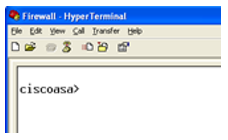
- Type enable and press Enter. A password prompt will appear.
- The password is the same password used to log-in to the gpservice account on service software. Enter the password and press Enter.
- A prompt message (ciscoasa#) will now appear.
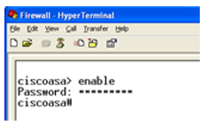
- Type terminal pager 0 and press Enter. This allows the configuration to continuously scroll as opposed to having to manually hit Enter as each short section appears.
- Type show conf and press Enter.
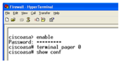
The configuration will begin scrolling down the screen. It is finished when the ciscoasa# prompt reappears.
- After the ciscoasa# prompt type config t and press Enter. The prompt changes to ciscoasa(config)#.
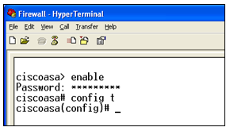
- Now run the following four commands, pressing Enter after each one:
Note—
- Section a. (below) shows the formatting of the commands.
- Section b. provides an example with representative values.
- The system may display messages after you press Enter. These are typically advisory only and should not prevent you from entering the remaining commands.
- Type exit and press Enter. You will now be taken back to the ciscoasa> prompt.
- Type exit and press Enter once more. You will still be at the ciscoasa> prompt.
- Click the Disconnect button.
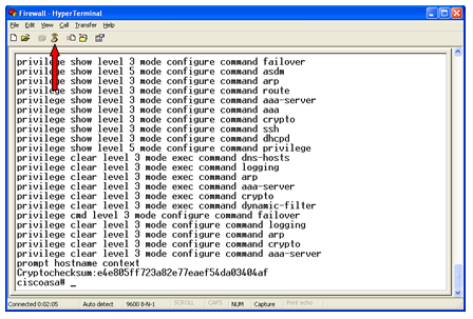
- Close the window and choose not to save the connection.
- Disconnect the power from the firewall, wait one minute, then reconnect the power. This is to ensure no connection issues when reprogramming the firewall.
Note— It is recommended to leave the FSE laptop connected to the firewall until after successful verification.
Verification
- Verify with the customer that logs from the Cisco firewall are being received at their Syslog server.
- Close HyperTerminal and disconnect the FSE laptop from the firewall.
 button at the top of the page to send feedback, comments, or change requests.
button at the top of the page to send feedback, comments, or change requests.